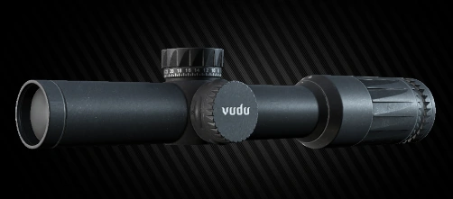

Descripción
El visor EOTech Vudu 1-6x24, igualmente efectivo en plataformas AR y rifles de cerrojo. Su retícula de anillo de velocidad estilo EOTech está diseñada para un ataque rápido al objetivo a baja potencia, al tiempo que brinda la resolución y precisión necesarias para objetivos de mayor alcance.